Step 1 · 체온 확인
광고와 메뉴 아래로 밀려난 체온
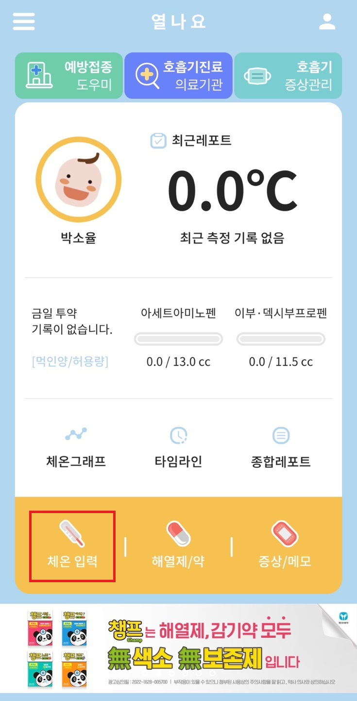
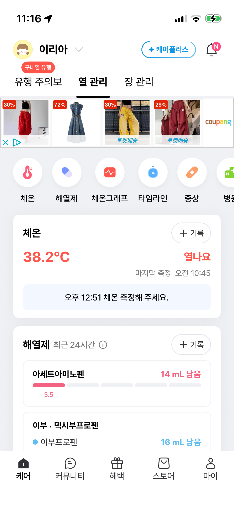
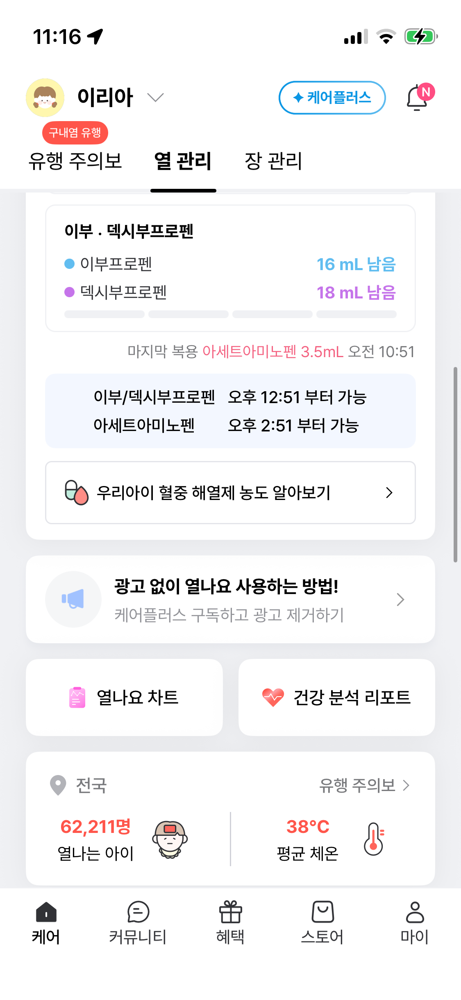
리뉴얼 이후 가시성이 떨어지고, 급한데 정보 확인 하려면 스크롤 한참 내려야 하는 게 불편하네요.
App Store 리뷰 · 2024년 2월
- before
- 홈 첫 화면 한가운데, 큰 숫자로 바로 보이는 체온
- after
- 광고 배너와 아이콘이 생기면서, 주 기능인 체온 기록과 해열제 기록이 하단으로 밀려남.
Details
열나요는 아이가 열이 날 때 체온과 해열제 복용을 기록하는 앱이에요. 밤새 아이를 돌보는 보호자가 급한 순간에도 헤매지 않도록, 기록 흐름과 화면을 다시 설계했어요.
Google Play 리뷰 9,901건을 읽으며 문제를 세 가지로 좁혔고, 찾은 이유를 화면 구조·문구·디자인 시스템까지 이어서 설계했어요.
Role
Credits
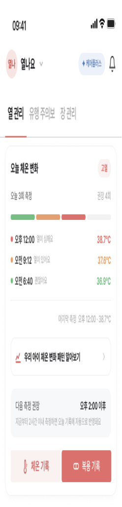
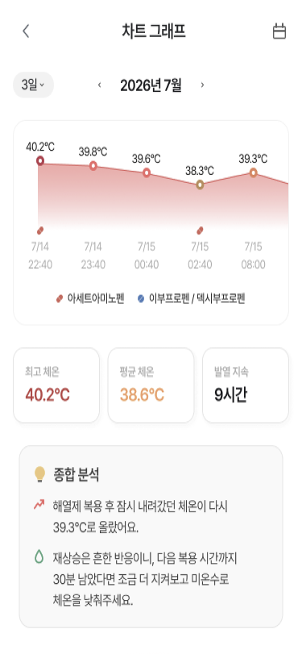
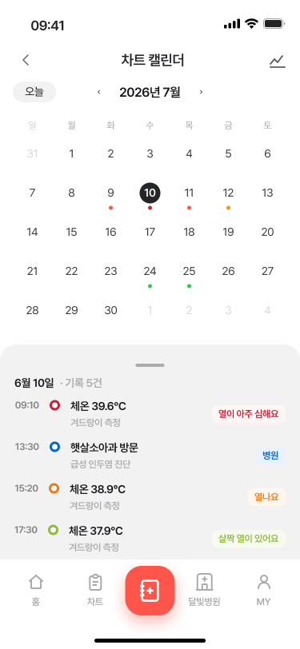
UX/UI RedesignGentle care guiding every feverish night
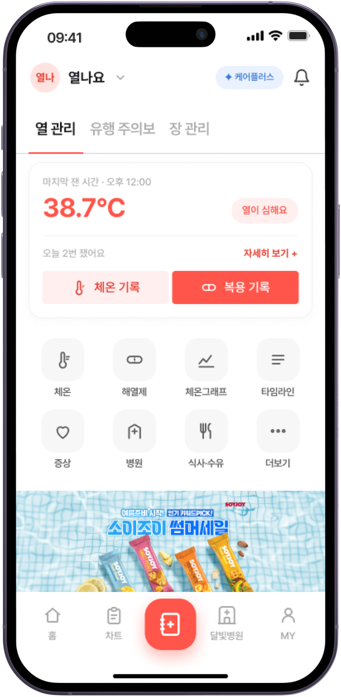
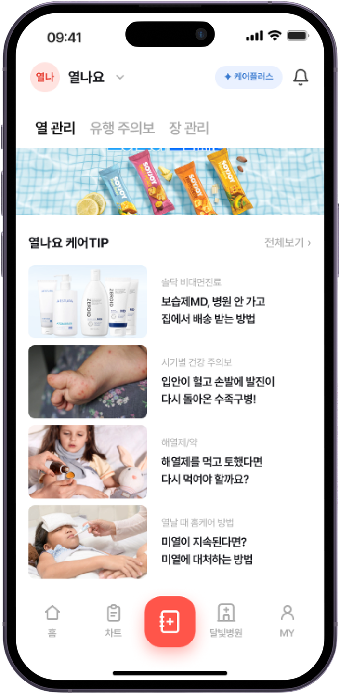
조카를 언니와 함께 돌보며 열나는 밤을 직접 겪었기에, 책상 위 분석보다 유저 곁에서 출발하였습니다. 가까이에서 관찰한 장면으로 문제를 정의하고, 테스트 피드백에 따라 앞 단계를 다시 오가는 ‘밀착형 5단계 프로세스’로 진행했어요.
01 Empathize
공감하기
스토어 리뷰와 기존 앱 진단, 참여 관찰, 네트노그래피, 심층 인터뷰로 부모가 겪는 발열 케어 상황을 이해해요.
02 Define
문제 정의
데스크 리서치와 고객 여정지도의 페인 포인트를 겹쳐 TOP3 문제를 고르고, HMW 질문과 프로젝트 목표를 세워요.
03 Ideate
아이디어
HMW마다 아이디어를 모아 우선순위를 매기고, 긴급도 순 로드맵과 유저플로우, 순화 워딩을 정해요.
04 Prototype
프로토타입
와이어프레임 시안을 비교한 뒤 핵심 화면과 인터랙션, 디자인 시스템을 만들어요.
05 Test → Loop
테스트와 개선
AI 가상 인터뷰로 사용성을 점검하고, 드러난 실패를 정의 단계로 되돌려 문제와 화면을 다시 고쳐요.
누적 다운로드 200만+, 아이가 열이 나면 많은 부모가 가장 먼저 여는 앱이지만 Google Play 평점은 3.9점에 그쳐요. 유저가 계속 쓰고 있다는 건 여전히 필요하다는 뜻이고, 낮은 평점은 그만큼 채워지지 않은 기대가 남아 있다는 신호예요. 부모들이 등을 돌린 건 앱이 필요 없어져서가 아니라, 리뉴얼로 바뀐 사용 방식 때문이었어요.
Rating (평점 변화 · 그룹마다 단위가 달라요: 별점 / 비율)
리뉴얼 후 평균 별점
−55%
1점 리뷰, 비교 앱 대비
40배+
Reviews (Google Play)
2026년 10월 기준
비슷한 규모의 육아 기록 앱과 비교
* 1점 리뷰는 전체 리뷰의 21.8%
리뉴얼 이후 스토어 리뷰와 앱 커뮤니티, 기존 앱 화면을 함께 살펴보며, 유저가 겪는 문제를 UX 8가지와 UI 3가지로 나눴어요. 같은 입력을 매번 반복해야 하는 흐름과, 급할 때 한눈에 보이지 않는 화면이 불편의 중심이었어요.
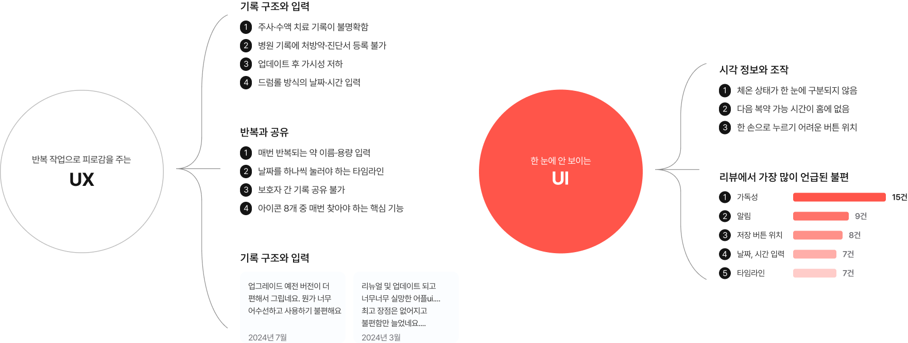
아이가 열이 날 때 거치는 단계 가운데, 리뉴얼 이후 리뷰에서 불편이 많이 언급된 지점을 업데이트 전후 화면으로 비교했어요. 앱 커뮤니티에는 ‘원래 있던 거 보려고 결제한 고객이 있을 수 있는데 왜 있는걸 없애죠’처럼, 리뉴얼로 사라진 기능을 아쉬워하는 글도 남아 있었어요.
Step 1 · 체온 확인



리뉴얼 이후 가시성이 떨어지고, 급한데 정보 확인 하려면 스크롤 한참 내려야 하는 게 불편하네요.
App Store 리뷰 · 2024년 2월
Step 2 · 체온 입력·저장
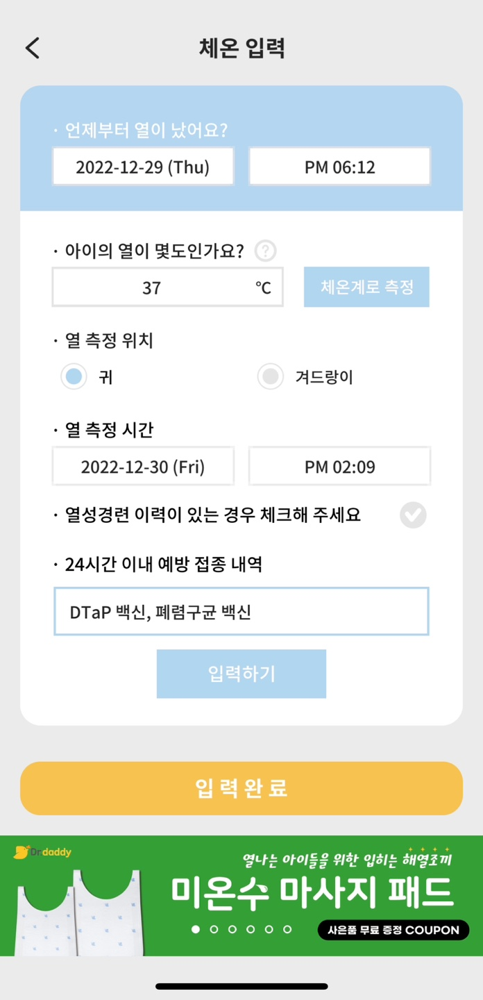
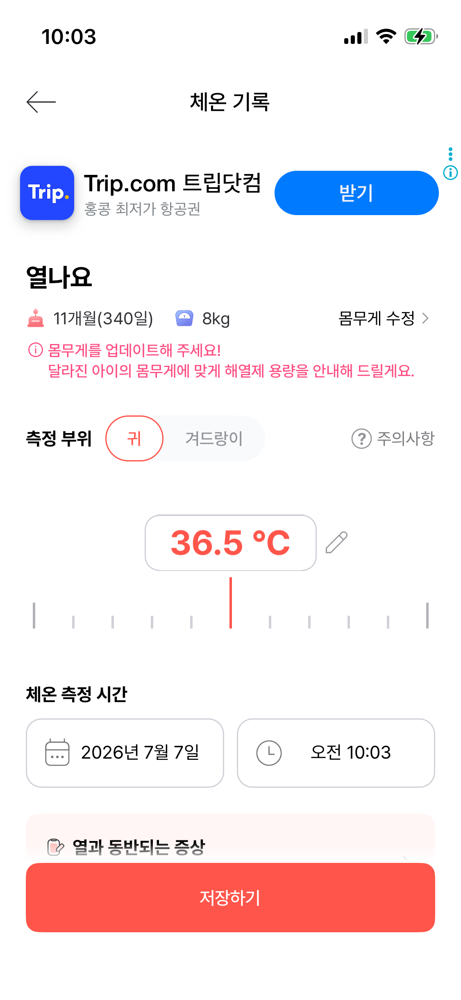
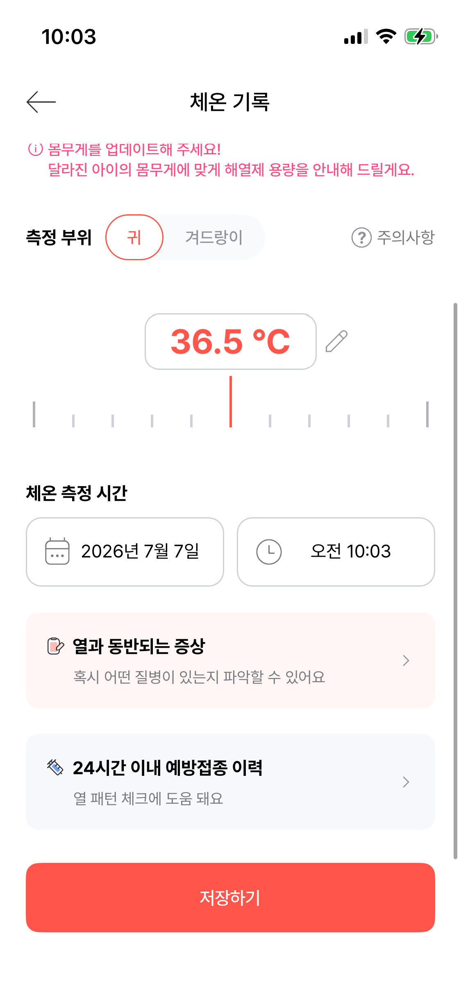
업데이트 전에는 작성 후 하단 버튼을 바로 누를 수 있었는데, 지금은 ‘저장하기’ 버튼이 한페이지에 없어서 번거롭네요.
Google Play 리뷰 · 2024년 7월
Step 4 · 경과 확인
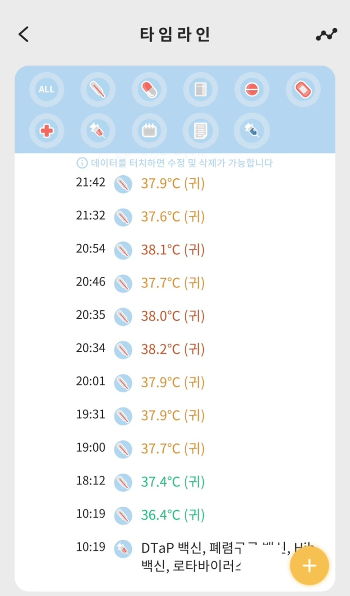
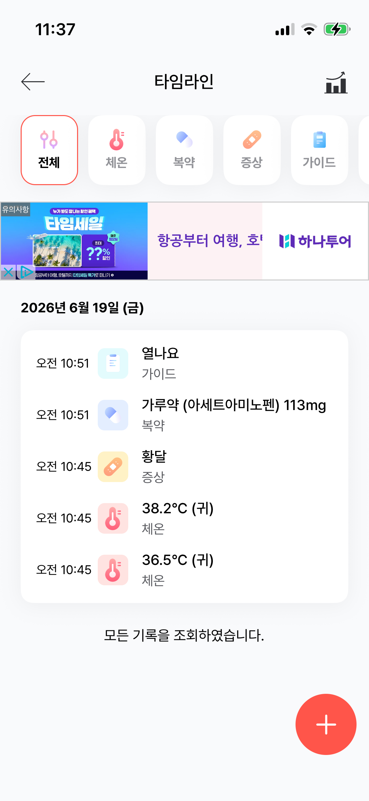
이전 기록을 보고싶은데 입력이 안된 날도 같이 떠서 날짜를 하나하나 눌러서 확인 해야 한다는 게 불편하네요
Google Play 리뷰 · 2024년 3월
육아 커뮤니티, 열나요 공식 카페, 앱 리뷰, 심층 인터뷰를 함께 살펴봤어요.
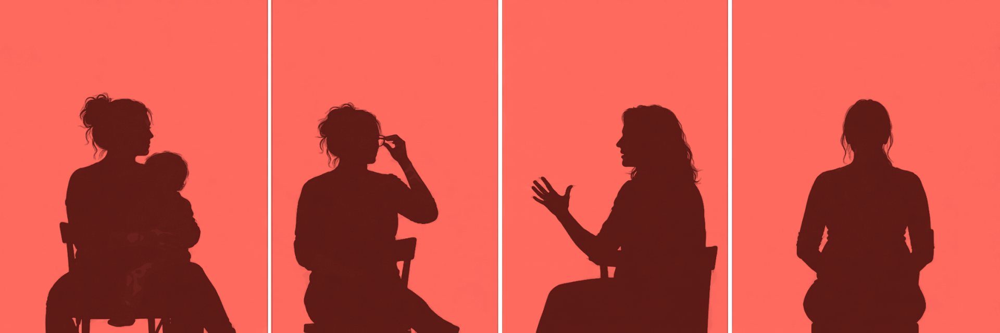
돌 무렵 아기에게 흔한 돌발진으로 조카의 열이 나흘간 이어졌고, 그 시간을 함께 돌보며 참여 관찰을 진행했어요. 교대로 아이를 돌보는 두 양육자의 페르소나와 고객 여정 지도를 구성하고, 감정 곡선을 따라 앱 사용 맥락의 페인 포인트를 도출했어요.
1일차 밤
Pain놓치는 복용 시간
2일차 · 교대와 첫 진료
Pain두 계정으로 쪼개진 기록
Pain화면 밖 저장 버튼
Pain놓치기 쉬운 진료 질문
3~4일차 · 집
Pain얕은 돌봄 안내
5일차 이후 · 회복
Pain병원 재방문에 대한 불안
네트노그래피, 페르소나 저니, 교차 검증에서 모은 의견을 나란히 놓고 겹치는 고민을 묶었어요. 서로 다른 곳에서 나온 말이었지만, 네 가지 고민으로 이어졌어요.
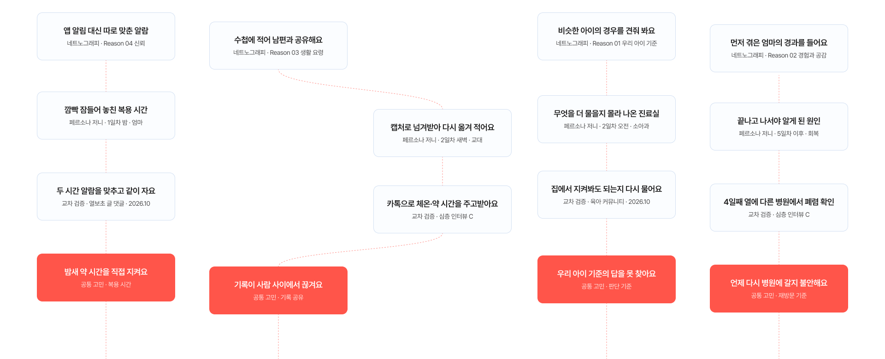
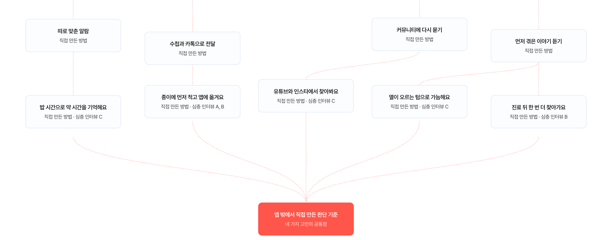
데스크 리서치로 찾은 열한 가지 불편과 고객 여정 지도의 여섯 가지 페인 포인트를 겹쳐 보고, 열이 나는 순간 얼마나 자주, 얼마나 급하게 부딪히는지를 기준으로 우선순위를 정했어요. 세 번째 문제는 처음엔 기록 불편에 가려져 있다가, 테스트 뒤 네트노그래피와 심층 인터뷰를 다시 보며 또렷해졌어요.
TOP 1
핵심 버튼인 ‘저장’은 화면 밖에 있고, 드럼롤 방식의 입력 버튼으로 인해서 사용하는 유저의 피로도를 올리고 있어요.
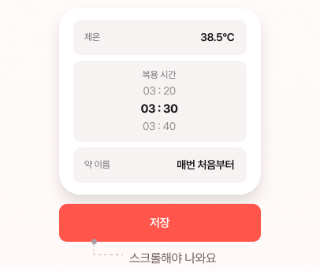
“애가 아파서 마음이 급한데, 뭘 해야할게 많으니까 답답하고 안 쓰고 싶어져요.”Google Play 리뷰 · 2024.05
TOP 2
기록을 함께 볼 수 없어 캡처나 카톡으로 보내고, 받은 사람이 다시 옮겨 적어요. 이 과정에서 정보가 빠지면 같은 약을 또 먹이는 실수로 이어져요.
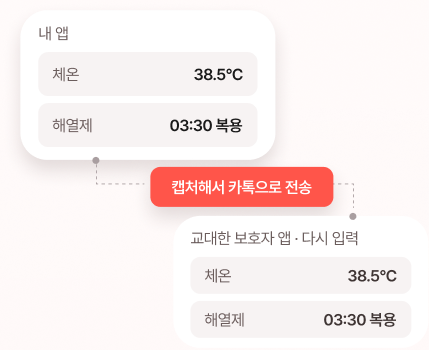
“계정 연동이 안 되니까, 교대자의 기록을 캡처로 받아서 제 앱에 다시 입력했어요.”참여 관찰 · 2일차 새벽 · 교대
TOP 3
체온을 기록하면 안내가 나오지만, 무엇을 더 해야 할지, 언제 병원에 가야 할지 상세하게 알려 주지 않아 부모는 유튜브와 커뮤니티에서 답을 찾아요.
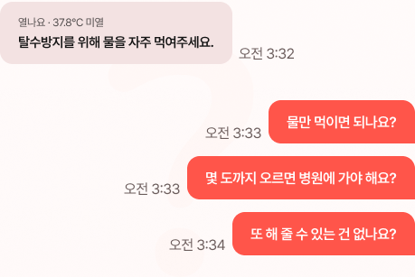
“약을 먹여 열이 떨어져도 두 시간 뒤면 다시 올라요. 그 텀이 계속 똑같으면 병원에 또 가 봐야겠다 싶어요. 이런 건 앱보다 유튜브나 인스타에서 찾아봐요”심층 인터뷰 C · 30대 엄마 · 4살 아이
03 Ideate · Ideation
리뷰 속 요청과 직접 관찰한 장면에서 아이디어를 펼친 뒤, 어떤 HMW에 답하는지에 따라 세 갈래로 묶었어요. 그리고 ‘열이 나는 그 순간에 꼭 필요한가’를 기준으로, MVP에 넣을 것과 다음 단계로 넘길 것을 나눴어요.
Only What the Moment Needs
HMW 1 · Quick Record짧은 틈에 끝나는 기록
HMW 2 · Shared Care보호자가 바뀌어도 이어지는 기록
HMW 3 · Guided Decision판단을 덜어 주는 안내
아이가 아플 때 가장 자주 쓰는 체온 기록과 복약 기록을 중심으로 MVP 유저플로우를 다시 짰어요. 기록을 시작하는 길, 입력하는 방법, 기록을 다시 보는 화면을 차례로 줄였어요.
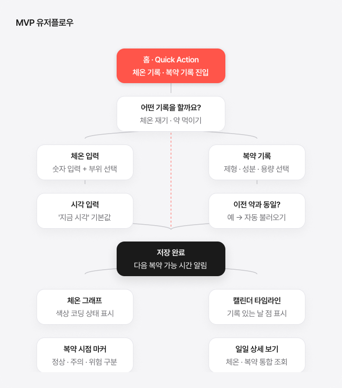
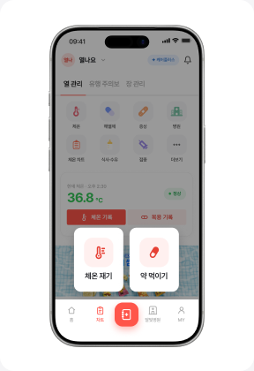
01홈에서 바로 두 갈래로
홈 하단 가운데 버튼을 누르면 체온 재기와 약 먹이기 중 하나를 고르게 했어요. 어느 화면에 있든 두 번의 탭이면 기록을 시작해요.
해결한 불편
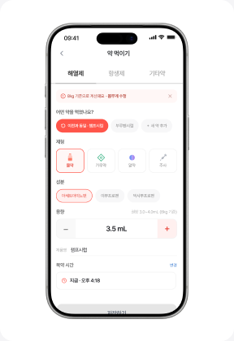
02묻는 대신 기본값으로
시간은 ‘지금’, 약은 ‘이전과 동일’이 먼저 선택돼 있어요. 바꿀 때만 손대면 되니 입력 단계가 줄어요.
해결한 불편
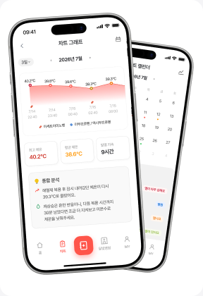
03보는 화면은 두 가지로
지금의 열 흐름은 그래프로, 지난 기록은 캘린더로 나눴어요. ‘언제 열이 났는지’를 날짜마다 눌러 보지 않아도 돼요.
해결한 불편
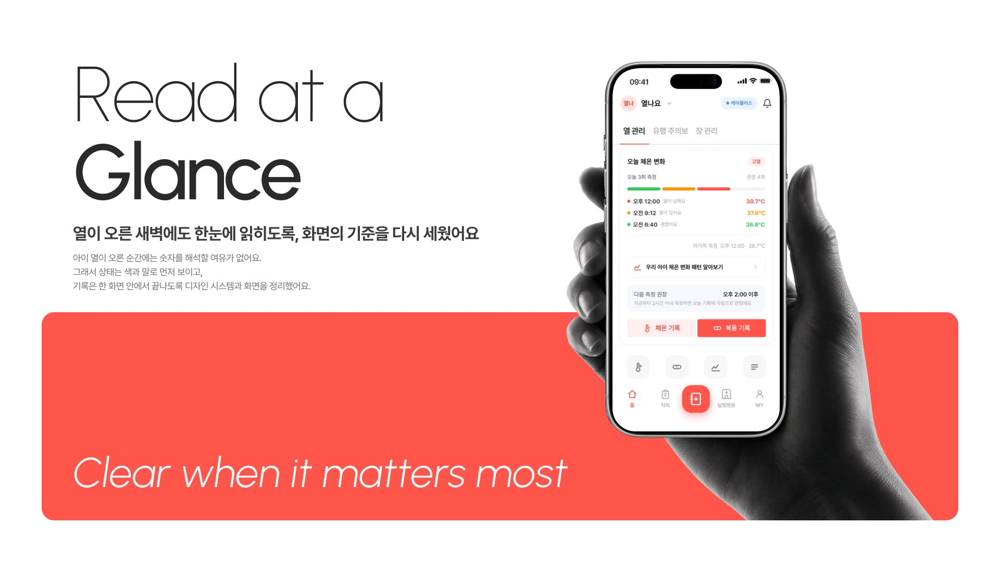
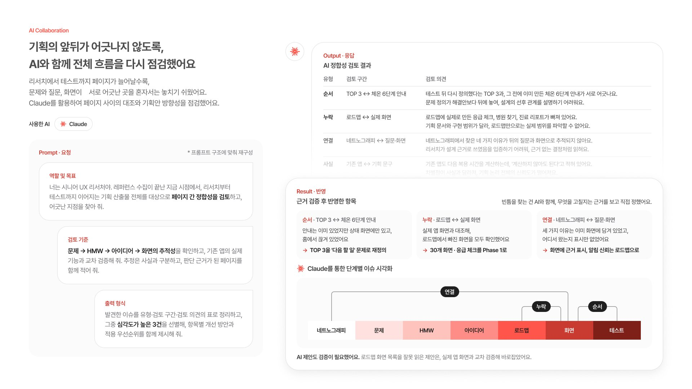
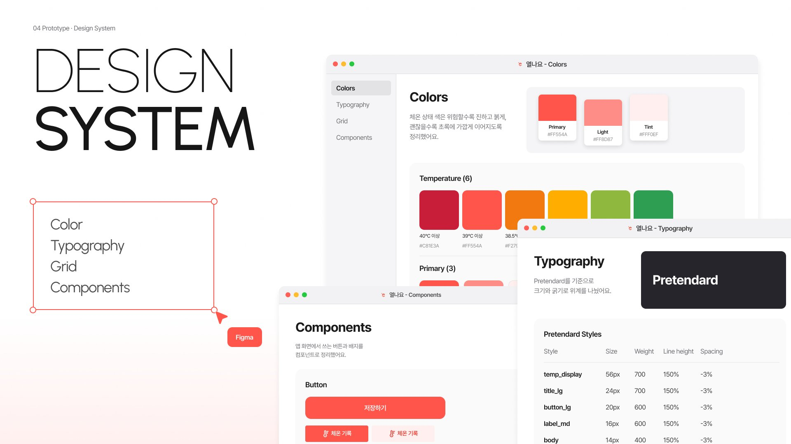
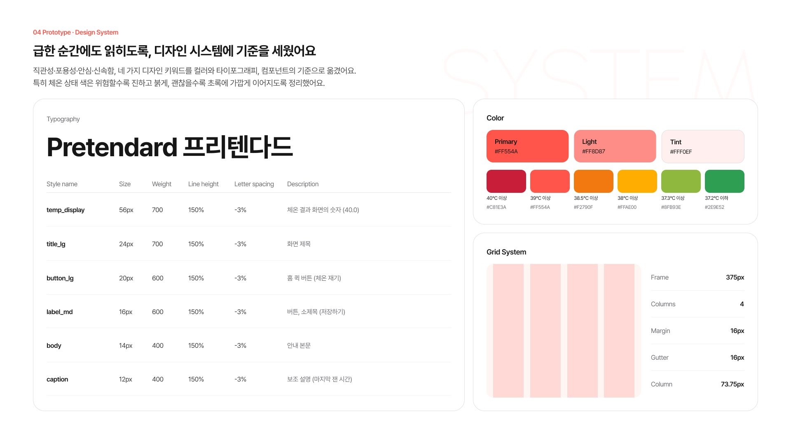
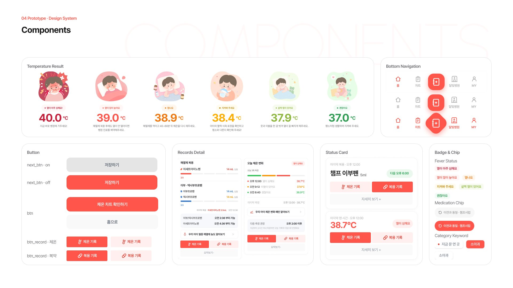
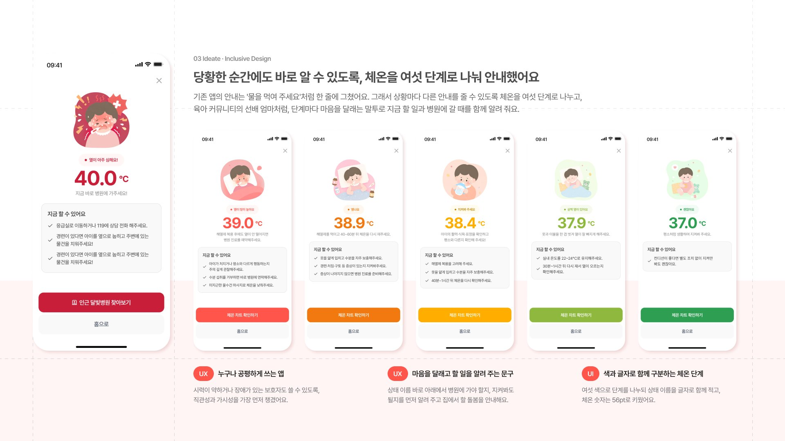


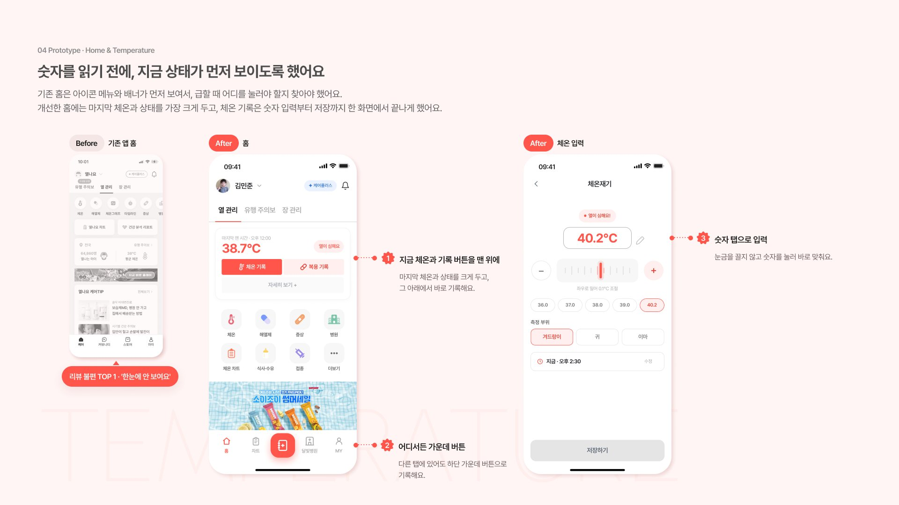
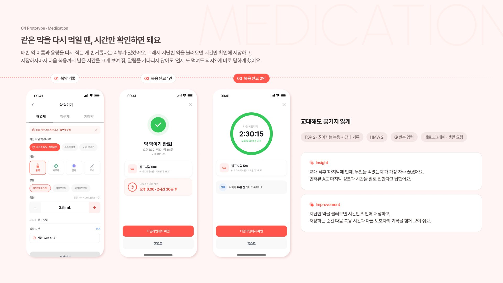
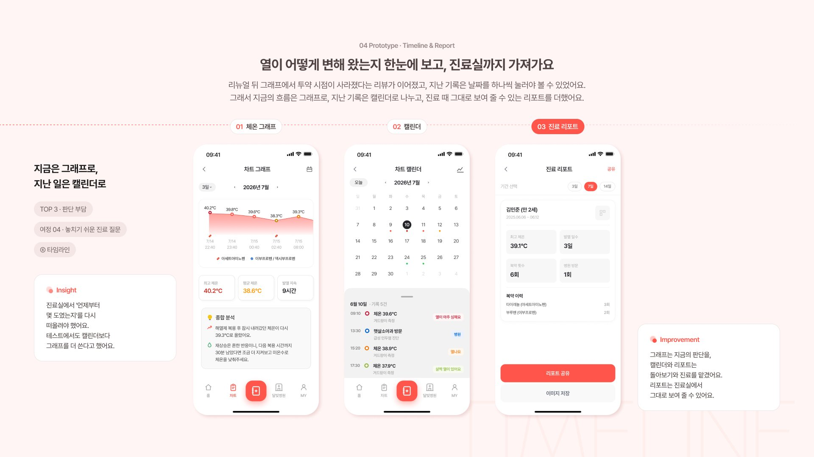


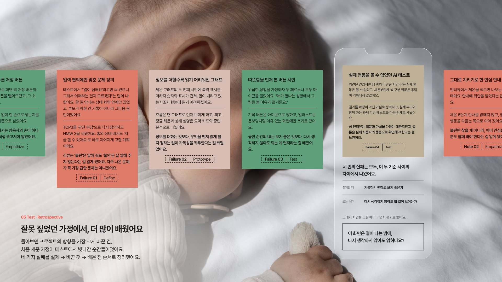